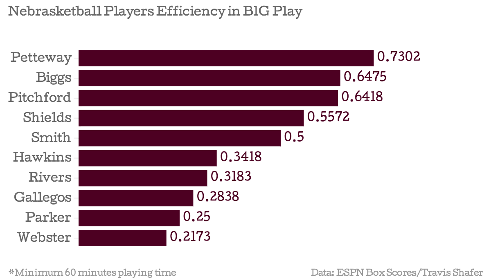
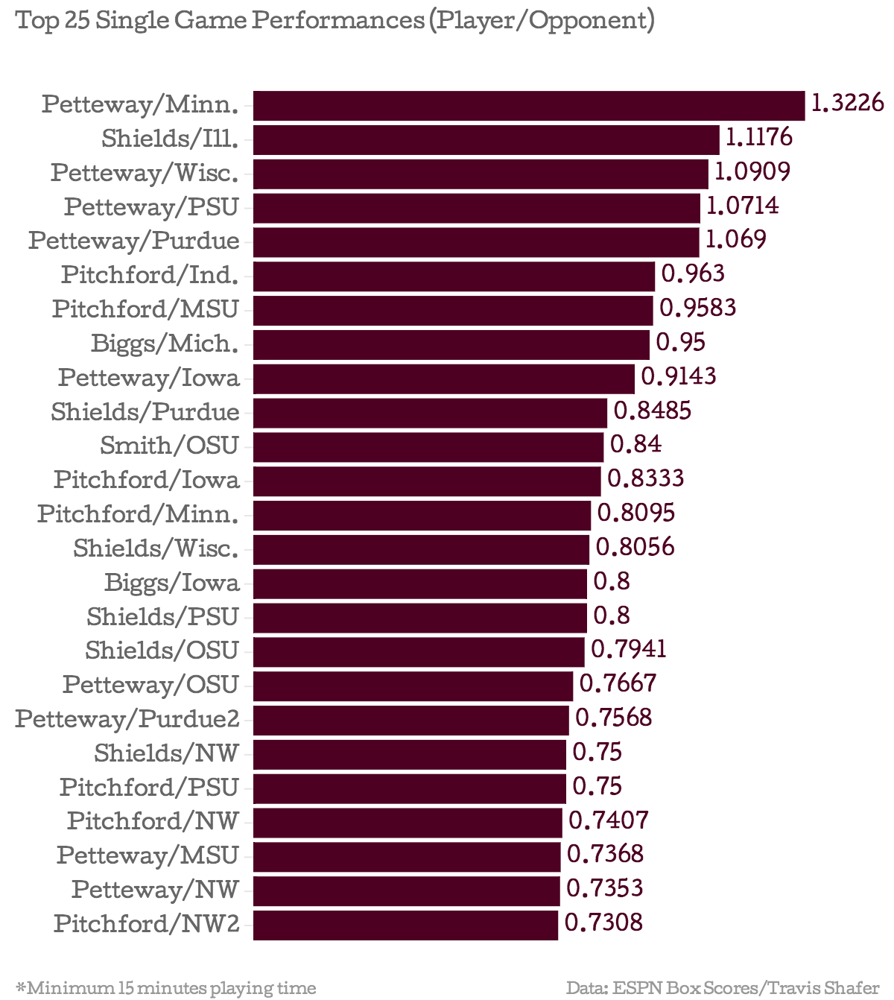
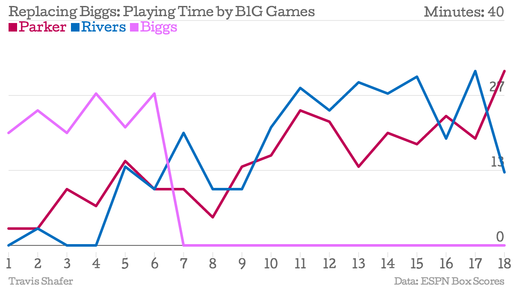

Introducing the SSR system. The SSR, or Simple Shafer Rating system, is an extremely streamlined measuring tool for basketball players. With a goal of simlicity, many statistical categories were, unfortunately, left out of the analysis. Here is the SSR formula:
It's that simple. No fancy-dance analysis, no bells, no whistles. Just points, rebounds, and minutes. Let's get started.
| Player | Minutes | Rebounds | Points | SSR |
|---|---|---|---|---|
| Terran Petteway | 582 | 91 | 334 | 0.7302 |
| Deverell Biggs | 139 | 25 | 65 | 0.6475 |
| Walter Pitchford | 416 | 87 | 180 | 0.6418 |
| Shavon Shields | 603 | 107 | 229 | 0.5572 |
| Leslee Smith | 284 | 72 | 70 | 0.5000 |
| Nathan Hawkins | 79 | 10 | 17 | 0.3418 |
| David Rivers | 289 | 50 | 42 | 0.3183 |
| Ray Gallegos | 518 | 38 | 109 | 0.2838 |
| Benny Parker | 264 | 20 | 46 | 0.2500 |
| Tai Webster | 382 | 36 | 47 | 0.2173 |
As if you needed any more evidence. The Big Ten's leading scorer has made his presence felt in league play, and everyone has seen him dominate. Just how good is he doing this year? We have a nice little graphic to show you. And Deverell Biggs was Nebrasketball's second best player? With a relatively small sample size, and by this form of measurement, Biggs edges out Walter Pitchford for the number 2 spot. Shavon Shields follows in fourth overall, but he played more minutes than anyone, giving him the largest denominator on the team.
Pitchford adds 7 and Shields adds 5. Biggs and Smith offer the remainder. Biggs, who is no longer with the team due to repeat violations, was quite a contributor according to the SSR. Replacing him was no small task for Tim Miles and company. How did they do it? They reached into their bag of tricks and pulled some players. Let's take a look.
After contributing almost no minutes at the beginning of the year, Miles dished Parker and Rivers a healthy dose of hustle time. It should be noted that the SSR is extremely biased against Benny Parker and his style of play. His contrubtion is mostly measurable in assists, steals, and defense. Certainly not rebounds (he's listed as 5'9" for goodness sake) and he doesn't usually need to score. Parker still doesn't reach the bottom of our rankings, even in one of the harshest measuring systems in relation to his style of play.